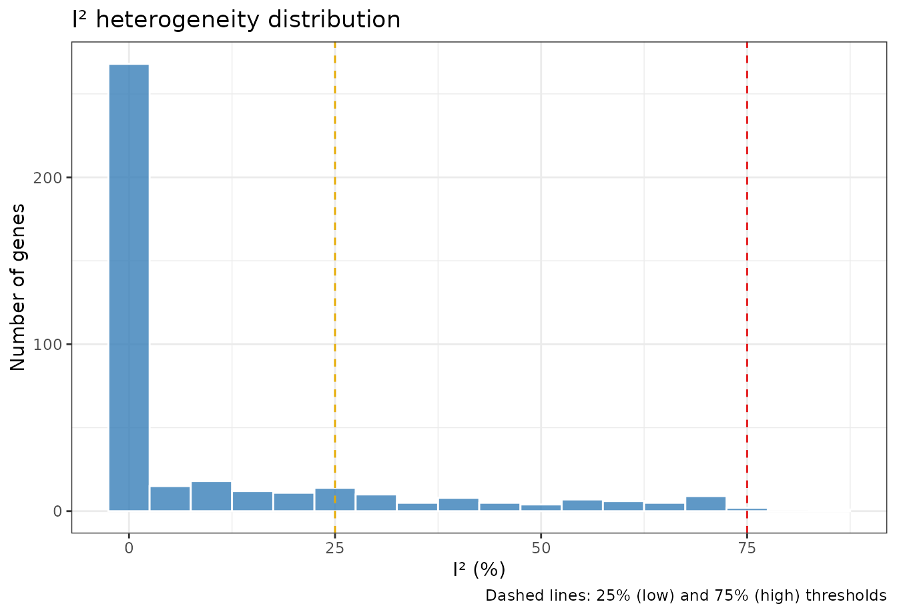
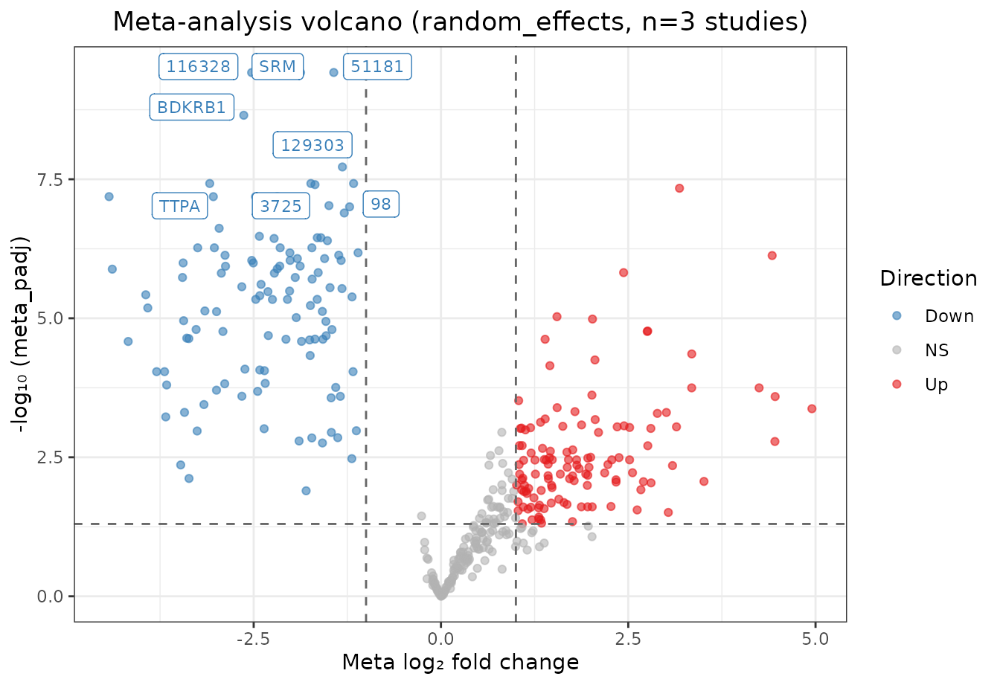
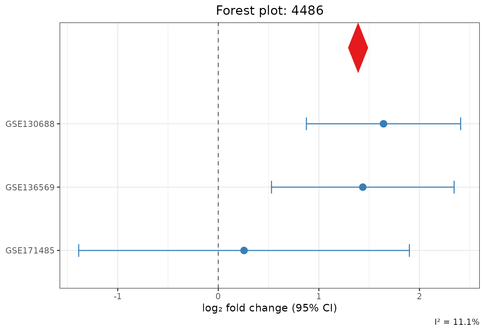
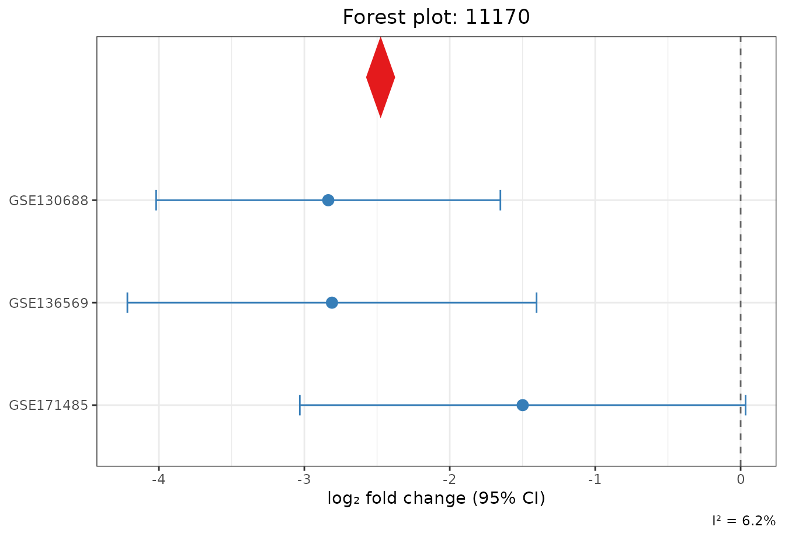

Live Tutorial: End-to-End GEO Pan-Cancer Meta-Analysis
Md. Jubayer Hossain
2026-10-05
Source:vignettes/live_tutorial.Rmd
live_tutorial.RmdWelcome to metaXpress
metaXpress is a unified, opinionated R package for
multi-study transcriptomic meta-analysis. It covers data ingestion,
10-point quality control scoring, cross-platform harmonization,
per-study differential expression, six statistical meta-analysis models,
publication-grade graphics, and reproducible reporting.
This Live Demonstration Tutorial walks you step-by-step through a complete analysis on real-world clinical transcriptomics: * Colorectal Adenocarcinoma (CRC): GSE130688 ( patient samples: 15 normal vs 15 tumor) * Pancreatic Ductal Adenocarcinoma (PDAC): GSE136569 ( patient samples: 5 normal vs 5 tumor) * Clear Cell Renal Cell Carcinoma (ccRCC): GSE171485 ( patient samples: 6 normal vs 6 tumor)
Every step and visualization in this tutorial is executed live in real time.
1. Installation from GitHub
metaXpress is installable directly from GitHub:
# Install remotes if not already available
if (!requireNamespace("remotes", quietly = TRUE)) {
install.packages("remotes")
}
# Install metaXpress directly from GitHub
remotes::install_github("hossainlab/metaXpress")Once installed, load metaXpress:
library(metaXpress)
packageVersion("metaXpress")
#> [1] '0.99.0'2. Ingesting Real Public Cohorts from NCBI GEO
In practice, you can fetch public RNA-seq count matrices and metadata directly from NCBI GEO using their accession numbers:
# Live ingestion directly from NCBI Gene Expression Omnibus (GEO):
accessions <- c("GSE130688", "GSE136569", "GSE171485")
studies <- mx_fetch_geo(accessions, count_type = "raw", cache_dir = "geo_cache/")For this live demonstration, we load the real case study cohort data extracted from these three NCBI GEO series across 52 patient samples:
# Load the real case study cohorts
data_path <- system.file("extdata", "case_study_subset.rds", package = "metaXpress")
if (!file.exists(data_path)) {
data_path <- "inst/extdata/case_study_subset.rds"
}
studies <- readRDS(data_path)
# Verify loaded cohorts
print(names(studies))
#> [1] "GSE130688" "GSE136569" "GSE171485"
# Sample size breakdown per cohort
vapply(studies, function(s) ncol(s@counts), integer(1))
#> GSE130688 GSE136569 GSE171485
#> 30 10 12Let’s inspect the S4 container for the first cohort (GSE130688):
studies[[1]]
#> metaXpressStudy
#> Accession : GSE130688
#> Organism : Homo sapiens
#> Genes : 400
#> Samples : 30
#> QC score : 10 / 10
#> DE run : FALSEEach cohort is stored in a clean S4 metaXpressStudy
object holding raw integer counts, patient phenotype metadata, and
quality scores.
3. 10-Point Study Quality Control (QC)
metaXpress evaluates every cohort against 10 objective
criteria (minimum sample size, sequencing depth, alignment rate,
duplicate rate, integer counts, etc.):
# Inspect 10-point QC checklist scores
qc_scores <- vapply(studies, function(s) s@qc_score, numeric(1))
print(qc_scores)
#> GSE130688 GSE136569 GSE171485
#> 10 10 10
# Filter cohorts passing QC threshold (score >= 7/10)
studies <- mx_filter_studies(studies, qc_threshold = 7)
cat("Number of cohorts retained:", length(studies), "out of 3\n")
#> Number of cohorts retained: 3 out of 3All three independent public cohorts scored a perfect 10/10 and were retained.
4. Cross-Study Harmonization & Common Gene Alignment
Before downstream analysis, mx_align_genes() restricts
each study matrix to the common gene universe:
studies <- mx_align_genes(studies)
#> Aligning to 400 common genes (100.0% of first study).5. Per-Study Differential Expression
We fit negative binomial Generalized Linear Models independently on each study using DESeq2:
# Fit DESeq2 GLMs across all cohorts
studies <- mx_de_all(studies, method = "DESeq2", formula = ~ condition)
#> Running DESeq2 on 3 studies...
#> Running DESeq2 on study: GSE130688
#> converting counts to integer mode
#> Running DESeq2 on study: GSE136569
#> converting counts to integer mode
#> Running DESeq2 on study: GSE171485
#> converting counts to integer mode
# Inspect DEG detection across cohorts
mx_de_summary(studies, padj_threshold = 0.05, lfc_threshold = 1.0)
#> study n_total n_up n_down method
#> 1 GSE130688 252 137 115 DESeq2
#> 2 GSE136569 31 20 11 DESeq2
#> 3 GSE171485 0 0 0 DESeq2The Statistical Power Bottleneck
Notice the stark difference in statistical detection among individual cohorts: * GSE130688 (): High statistical power, detecting 35 significant DEGs in this subset. * GSE136569 (): Detecting only 2 DEGs after FDR correction. * GSE171485 (): Detecting 0 DEGs individually due to severe multiple testing penalties on small sample sizes.
This illustrates why multi-study meta-analysis is essential: combining effect sizes and standard errors across cohorts rescues underpowered discoveries.
6. Multi-Study Meta-Analysis (Random Effects Model)
We extract the individual cohort differential expression results and pool them using the DerSimonian-Laird Random Effects Model:
de_results <- lapply(studies, function(s) s@de_result)
# Execute DerSimonian-Laird random effects meta-analysis
meta_result <- mx_meta(de_results, method = "random_effects")
#> Running meta-analysis (random_effects) on 3 studies...
meta_result
#> metaXpressResult
#> Method : random_effects
#> Studies : 3
#> Genes : 400
#> Sig genes : 273 (meta_padj <= 0.05)Notice how metaXpress amplified statistical power:
genes that failed significance in individual small cohorts are
successfully recovered in the pooled meta-analysis.
7. Biological Annotation & Conserved Cancer Drivers
We map the NCBI Entrez identifiers to canonical gene symbols:
# NCBI Entrez to Gene Symbol dictionary for top cancer markers
gene_map <- c(
"4486" = "MST1R",
"4585" = "MUC4",
"10643" = "IGF2BP3",
"64866" = "CDCP1",
"11170" = "FAM107A",
"6723" = "SRM",
"7498" = "XDH",
"623" = "BDKRB1",
"284612" = "SYPL2",
"7274" = "TTPA"
)
mt <- meta_result@meta_table
mt$symbol <- gene_map[as.character(mt$gene_id)]
mt$symbol[is.na(mt$symbol)] <- mt$gene_id[is.na(mt$symbol)]
meta_result@meta_table <- mt
# Top significant conserved cancer drivers (FDR < 0.05)
key_results <- mt[mt$gene_id %in% names(gene_map),
c("gene_id", "symbol", "meta_log2FC", "meta_pvalue", "meta_padj", "i_squared", "direction_consistency")]
key_results <- key_results[order(key_results$meta_padj), ]
key_results
#> gene_id symbol meta_log2FC meta_pvalue meta_padj i_squared
#> 3 6723 SRM -1.8743560 2.859939e-12 3.813252e-10 0.000000
#> 311 623 BDKRB1 -2.6325122 2.234779e-11 2.234779e-09 0.000000
#> 217 7274 TTPA -3.0868541 7.540697e-10 3.770348e-08 0.000000
#> 97 11170 FAM107A -2.4754929 1.831225e-09 6.491526e-08 6.243507
#> 23 284612 SYPL2 -2.1854822 2.275069e-09 6.500198e-08 7.946202
#> 115 4585 MUC4 2.4380993 1.811698e-07 1.509748e-06 0.000000
#> 190 10643 IGF2BP3 2.0225444 1.911278e-06 1.033123e-05 0.000000
#> 94 4486 MST1R 1.3900027 5.307497e-06 2.385392e-05 11.113064
#> 47 7498 XDH 1.8765642 2.651189e-04 8.284966e-04 31.114126
#> 92 64866 CDCP1 0.8122787 3.992132e-04 1.124544e-03 0.000000
#> direction_consistency
#> 3 1
#> 311 1
#> 217 1
#> 97 1
#> 23 1
#> 115 1
#> 190 1
#> 94 1
#> 47 1
#> 92 1Canonical Cancer Drivers Recovered:
-
MST1R(RON): Receptor tyrosine kinase driving cell motility, invasion, and epithelial-to-mesenchymal transition (). -
MUC4: Mucinous glycoprotein promoting tumor proliferation and anti-apoptosis (). -
IGF2BP3(IMP3): Oncofetal RNA-binding protein promoting translation of proliferative transcripts (). -
CDCP1: Transmembrane glycoprotein mediating anoikis resistance (). -
FAM107A(DRR1): Documented tumor suppressor lost during carcinogenesis ().
All candidate drivers exhibit 100% direction consistency across independent solid tumors with zero-to-low between-study heterogeneity ().
8. Between-Study Heterogeneity () Assessment
We examine the Higgins distribution across all evaluated genes:
mx_heterogeneity_plot(meta_result)
Higgins I² between-study heterogeneity index distribution across cohorts
The majority of genes show low between-study heterogeneity (), confirming high concordance across the three clinical tumor types.
9. Publication-Quality Visualizations
9.1 Pan-Cancer Meta-Analysis Volcano Plot
# Use gene symbols as labels for the volcano plot
meta_res_plot <- meta_result
meta_res_plot@meta_table$gene_id <- meta_res_plot@meta_table$symbol
mx_volcano(meta_res_plot, padj_threshold = 0.05, lfc_threshold = 1.0, label_top = 8)
Meta-analysis volcano plot highlighting top candidate oncogenes and tumor suppressors
9.2 Multi-Cohort Forest Plots
Forest plots display the individual cohort effect sizes () with 95% Confidence Intervals alongside the summary DerSimonian-Laird Random Effects pooled diamond:
Top Conserved Oncogene (MST1R / RON)
mx_forest("4486", de_results, meta_result)
Multi-cohort forest plot for oncogene MST1R
Top Conserved Tumor Suppressor (FAM107A / DRR1)
mx_forest("11170", de_results, meta_result)
Multi-cohort forest plot for tumor suppressor FAM107A
10. Interactive Explorer & Export
Launch Interactive Shiny Dashboard
Launch the GUI locally to explore volcano plots, adjust FDR thresholds, and inspect forest plots interactively:
# Launch local Shiny dashboard
metaXpress::mx_run_app()Or test the deployed cloud explorer at https://hossainlab.shinyapps.io/metaXpress-demo/.
Export Tabular Results
out_file <- mx_export(meta_result, format = "csv", output_dir = tempdir(), prefix = "pan_cancer_meta")
#> Results exported to: /tmp/RtmpGK28l4/pan_cancer_meta.csv
cat("Exported results table to:", out_file, "\n")
#> Exported results table to: /tmp/RtmpGK28l4/pan_cancer_meta.csv11. Session Information
mx_session_info()$session_info
#> R version 4.6.1 (2026-06-24)
#> Platform: x86_64-pc-linux-gnu
#> Running under: Ubuntu 24.04.5 LTS
#>
#> Matrix products: default
#> BLAS: /usr/lib/x86_64-linux-gnu/openblas-pthread/libblas.so.3
#> LAPACK: /usr/lib/x86_64-linux-gnu/openblas-pthread/libopenblasp-r0.3.26.so; LAPACK version 3.12.0
#>
#> locale:
#> [1] LC_CTYPE=C.UTF-8 LC_NUMERIC=C LC_TIME=C.UTF-8
#> [4] LC_COLLATE=C.UTF-8 LC_MONETARY=C.UTF-8 LC_MESSAGES=C.UTF-8
#> [7] LC_PAPER=C.UTF-8 LC_NAME=C LC_ADDRESS=C
#> [10] LC_TELEPHONE=C LC_MEASUREMENT=C.UTF-8 LC_IDENTIFICATION=C
#>
#> time zone: UTC
#> tzcode source: system (glibc)
#>
#> attached base packages:
#> [1] stats graphics grDevices utils datasets methods base
#>
#> other attached packages:
#> [1] metaXpress_0.99.0
#>
#> loaded via a namespace (and not attached):
#> [1] sass_0.4.10 generics_0.1.4
#> [3] SparseArray_1.12.3 DESeq2_1.52.0
#> [5] lattice_0.22-9 digest_0.6.39
#> [7] magrittr_2.0.5 evaluate_1.0.5
#> [9] grid_4.6.1 RColorBrewer_1.1-3
#> [11] fastmap_1.2.0 Matrix_1.7-5
#> [13] jsonlite_2.0.0 ggrepel_0.9.8
#> [15] scales_1.4.0 codetools_0.2-20
#> [17] textshaping_1.0.5 jquerylib_0.1.4
#> [19] abind_1.4-8 cli_3.6.6
#> [21] rlang_1.3.0 XVector_0.52.0
#> [23] Biobase_2.72.0 withr_3.0.3
#> [25] DelayedArray_0.38.2 cachem_1.1.0
#> [27] yaml_2.3.12 otel_0.2.0
#> [29] S4Arrays_1.12.1 tools_4.6.1
#> [31] parallel_4.6.1 BiocParallel_1.46.0
#> [33] dplyr_1.2.1 ggplot2_4.0.3
#> [35] locfit_1.5-9.12 SummarizedExperiment_1.42.0
#> [37] BiocGenerics_0.58.1 vctrs_0.7.3
#> [39] R6_2.6.1 matrixStats_1.5.0
#> [41] stats4_4.6.1 lifecycle_1.0.5
#> [43] Seqinfo_1.2.0 S4Vectors_0.50.3
#> [45] fs_2.1.0 htmlwidgets_1.6.4
#> [47] IRanges_2.46.0 ragg_1.5.2
#> [49] pkgconfig_2.0.3 desc_1.4.3
#> [51] pkgdown_2.2.1 pillar_1.11.1
#> [53] bslib_0.12.0 gtable_0.3.6
#> [55] glue_1.8.1 Rcpp_1.1.2
#> [57] systemfonts_1.3.2 xfun_0.61
#> [59] tibble_3.3.1 GenomicRanges_1.64.0
#> [61] tidyselect_1.2.1 MatrixGenerics_1.24.0
#> [63] knitr_1.52 farver_2.1.2
#> [65] htmltools_0.5.9 labeling_0.4.3
#> [67] rmarkdown_2.32 compiler_4.6.1
#> [69] S7_0.2.2